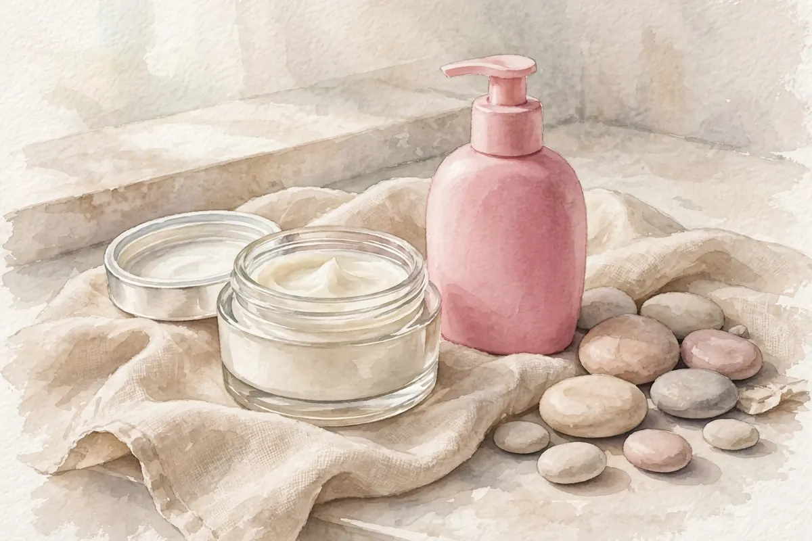

トップ ＞ スキンケア ＞ 塗るときの摩擦を減らす、手の動かし方
塗るときの摩擦を減らす、手の動かし方

施術では、触れ方そのものが仕事の中心です。同じクリームを使っても、手の動かし方ひとつで、肌に触れる圧やこすれ方は大きく変わります。自宅のスキンケアでも同じで、塗り方を少し見直すだけで、毎日の手触りの感覚は変わってきます。この記事では、私が施術でも意識している「こすらない動かし方」の基本を整理します。
指先だけで塗ると、力が点に集まる
指先だけでちょんちょんと塗り広げると、触れる面積が小さいぶん、圧が一点に集まりやすくなります。とくに急いでいる朝は、無意識に力が入りがちです。まずはアイテムを手のひら全体に広げてから顔に運ぶと、触れる面積が広がり、圧が分散します。手のひらを温めるように両手を合わせる動作も、そのまま準備運動になります。
量が少ないと、どうしても伸ばそうとしてこすってしまいます。塗るときに引っかかる感じがしたら、無理に伸ばさず、少量を継ぎ足すのが基本です。伸びが足りないのは量の問題であることが多く、手の力で解決しようとしないのがコツです。
「押さえる」「滑らせる」「包む」の使い分け
動かし方は大きく3つに分けられます。ひとつ目は「押さえる」。手のひらを当てて数秒止める動きで、化粧水のあとなどに向いています。ふたつ目は「滑らせる」。力を抜いて、顔の内側から外側へゆっくり運ぶ動きです。みっつ目は「包む」。両手で頬や額を覆うように当てる動きで、仕上げに使うと全体のなじみ具合を手で確認できます。
どの動きでも共通するのは、往復させないことです。行って戻る動きは、それだけこすれる回数が増えます。一方向に運んで、手を離して、また置く。この繰り返しのほうが、触れる回数を抑えられます。施術でも、同じ場所を何度も往復することは避けるのが基本です。
順番と速度を決めておく
塗る順番を決めておくと、塗り残しと二度塗りの両方を防げます。私は「頬、額、鼻まわり、あご、首」という順番を基本にしています。順番が決まっていれば、急いでいる日でも動きがぶれません。速度は、ゆっくりを意識するだけで十分です。速く動かすほど、無意識に力が入りやすくなります。
鏡の前で一度、自分の塗り方を眺めてみるのもおすすめです。思ったより強くこすっていた、という発見はよくあります。手は毎日使う道具です。道具の動かし方を見直すことは、ケアそのものを見直すことにつながります。
部位ごとに、触れる強さを変える
顔の中でも、触れる強さの目安は部位で違います。頬のように面積の広い部分は、手のひら全体で包む動きが向いています。目元や口元のように皮膚の薄い部分は、指の腹を使い、置くように触れるのが基本です。鼻まわりは、指先で小さく運ぶ動きが合います。部位ごとに道具としての「手の使い方」を切り替える意識を持つと、全体の触れ方が整います。
また、手自体のコンディションも関係します。手が冷えていると、無意識に力が入りやすくなります。ケアの前に両手をこすり合わせて温める、ぬるま湯で手を洗ってから始める、といった準備も、触れ方の一部です。道具である手を整えることが、塗り方の第一歩だと考えています。
塗る前の手の状態も、摩擦に影響します。手が乾いてかさついていると、肌の上での滑りが悪くなります。化粧水を手に取るとき、その水分が手のひらにも行き渡るので、まず手のひら全体に広げてから顔に運ぶ手順は、手自体のコンディションを整える意味もあります。道具の手入れと同じで、手の準備も手順の一部です。
力を抜くコツは、呼吸に合わせることです。息を吐くときに手を運ぶと、自然と力が抜けます。施術でも、呼吸のリズムは触れ方の質を左右します。朝の忙しい時間でも、一呼吸置く余裕が、毎日の触れ方を変えていきます。
塗る動作を見直すときは、鏡の前で一度、ゆっくりやってみることをおすすめします。普段の速度の半分で動かすと、どこで力が入っているか、どこを往復させているかがよく分かります。気づくことが、見直しの半分です。
また、アイテムのテクスチャーによっても、適した動かし方は変わります。さらっとしたものは滑らせやすく、重いものは押さえる動きが向いています。動かし方をアイテムに合わせる視点を持つと、塗り方の引き出しが増えます。
手は、毎日使う一番身近な道具です。その道具の動かし方に意識を向けることは、ケア全体の質を底上げします。今日の夜のケアから、一動作だけでもゆっくり試してみてください。
セラフィナ「手のひら全体で、そっと運ぶように塗るんだね。往復させないのがポイントだよ」